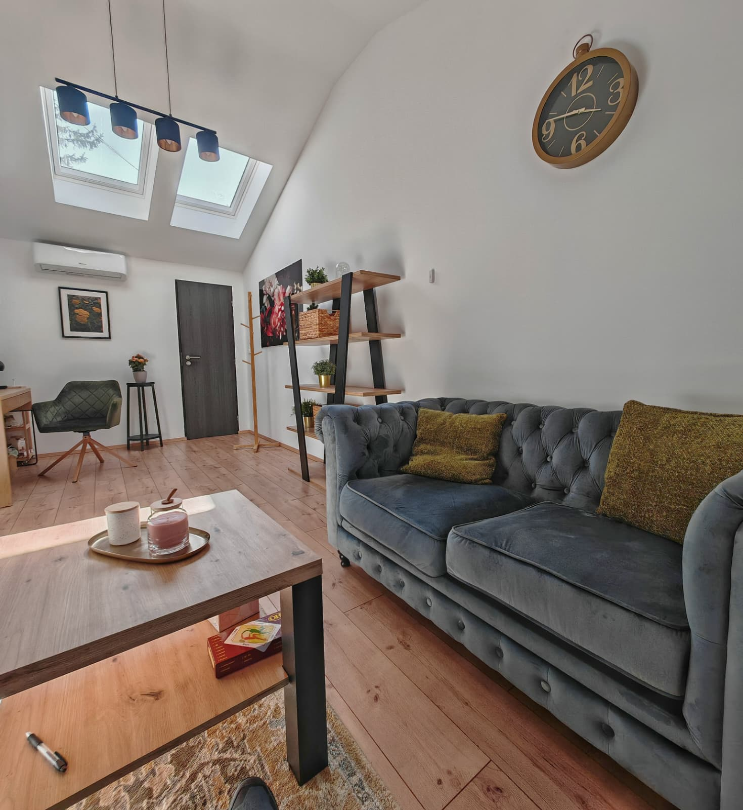

Grupna psihoterapija
Velika Gorica
Grupna psihoterapija je terapijski prostor u kojem ne radite na sebi samo u odnosu s terapeutom, nego i kroz odnose s drugim ljudima. Grupe vodim u suradnji s kolegicom i provode se kroz unaprijed osmišljene tematske cikluse.

Grupu čini nekoliko članova koji se redovito susreću i zajedno stvaraju prostor u kojem mogu govoriti o sebi, svojim iskustvima, odnosima, teškoćama i onome što im se događa upravo u tom trenutku.
Posebno je vrijedno to što u grupi ne razgovaramo samo o odnosima koje imate izvan nje. Obrasci koji se ponavljaju u vašem životu često se počnu pojavljivati i unutar same grupe. Tada ih možemo primijetiti, istražiti i pokušati doživjeti drugačije — u stvarnom odnosu s drugim ljudima.
Što grupa nudi, a drugačije je od rada jedan na jedan?
Jedna od važnih stvari u grupnoj psihoterapiji jest iskustvo da nismo jedini. Dok slušate druge kako govore o svojim iskustvima, često prepoznate dijelove sebe i vidite da se s nekim teškoćama, osjećajima ili obrascima ne susrećete samo vi.
Grupa istodobno donosi više različitih perspektiva. Pitanja, reakcije i iskustva drugih članova mogu otvoriti nešto što u razgovoru jedan na jedan možda ne biste tako lako vidjeli.
Ali grupa nije samo mjesto na kojem govorimo o odnosima — ona je svojevrsni mali društveni sustav u kojem se odnosi stvarno događaju. Netko može prvi put reći što stvarno misli, postaviti granicu ili pokazati ranjivost i vidjeti što se dogodi kada to napravi.
- Iskustvo da niste jedini s određenom teškoćom ili osjećajem
- Više perspektiva — reakcije i uvidi drugih članova
- Primijetiti vlastite obrasce dok se stvarno događaju
- Vježbati nešto drugačije u sigurnom odnosu s drugima
- Razvijati kvalitetniju komunikaciju i emocionalnu povezanost
Je li grupna psihoterapija za vas?
Grupni rad posebno može biti vrijedan ako se osjećate usamljeno, teško pronalazite svoje mjesto u odnosima, primjećujete da ponavljate iste obrasce ili želite razvijati kvalitetniju povezanost s drugima. Važno je imati motivaciju za grupni rad i spremnost da proces nije usmjeren samo na vas.
Grupa vam može odgovarati ako…
- se osjećate usamljeno ili izolirano
- teško pronalazite svoje mjesto u odnosima
- primjećujete da ponavljate iste obrasce
- želite razvijati komunikaciju i povezanost
- prepoznajete se u temi određenog ciklusa
Kada je prikladniji individualni rad
Grupna psihoterapija nije univerzalno rješenje. Ponekad je individualni rad prikladniji:
- kada vam je potrebna veća razina privatnosti
- u akutnoj krizi ili izraženoj emocionalnoj nestabilnosti
- kada problem traži vrlo individualiziran pristup
Najvažnije pitanje nije samo je li grupna terapija dobra, nego je li ona u ovom trenutku dobra za ovu konkretnu osobu.
Kako izgleda ciklus i susret?
Grupe su strukturirane oko određene teme i provode se kroz unaprijed definirane cikluse. Isti članovi zajedno prolaze dogovoreni broj susreta. Grupe su većinom zatvorene — novi se članovi nakon početka u pravilu ne uključuju, jer se teme nadograđuju iz susreta u susret.
Ne morate doći potpuno spremni i otvoreni. Sasvim je u redu prvo promatrati, slušati i upoznavati prostor i ljude — povjerenje se gradi kroz iskustvo, u vašem tempu i unutar dovoljno velike sigurnosti.
Jedan susret — dva sata
Susret traje dva sata, a grupu vode dva terapeuta. Na prvom susretu upoznajemo temu, pravila i način rada te počinjemo stvarati atmosferu povjerenja.
Zašto dva terapeuta
Dva terapeuta omogućuju da se kvalitetnije posvetimo članovima i istodobno pratimo što se događa u cijeloj grupi.
Zašto je važna redovitost
Teme se međusobno nadograđuju. Izostanak otežava praćenje procesa i utječe na dinamiku grupe, pa je o odsutnosti važno obavijestiti unaprijed.
Ciklus koji vodim s kolegicom
Grupe se organiziraju kroz unaprijed osmišljene tematske cikluse. Ciklus Autobiografija vodim zajedno s kolegicom Irenom Starman Frančić.
Autobiografija
Autobiografija je specifična logoterapijska metoda, strukturirana prema radu E. Lukas, usmjerena na upoznavanje sebe i dublje sagledavanje vlastitoga životnog puta. Kroz ciklus se osvrćemo na pojedina životna razdoblja, njihov utjecaj na sadašnjost, ali i na ono što želite i očekujete od budućnosti.
Na neki način pišemo vlastitu priču: gledamo ono što se već dogodilo i biramo što želimo i možemo u budućnosti.
Kako izgleda radCiklus je podijeljen na tematske cjeline koje kronološki prate životni put. Za svaki susret članovi dobivaju zadatak i pripremaju se za sljedeću temu. Na susretu svatko prolazi svoju temu pred grupom te dobiva refleksije drugih članova i terapeuta.
Čime se bavimo- upoznavanjem vlastite prošlosti i prihvaćanjem onoga na što nemamo utjecaj
- sagledavanjem vlastitih obrazaca u širem obiteljskom i društvenom kontekstu
- preuzimanjem odgovornosti za vlastiti život
- otvaranjem novim mogućnostima
- pronalaženjem životne zadaće
Ciklus vode Ana Leder i Irena Starman Frančić.
„Najvažnije je ne pitati samo je li grupna terapija dobra, nego je li ona u ovom trenutku dobra za ovu konkretnu osobu."— Irena Starman Frančić
Tko vodi ciklus Autobiografija
Grupe se uvijek vode u suradnji dvoje terapeuta. Promjena se u grupnom radu ne događa samo kroz razumijevanje, nego kroz iskustvo odnosa — a mnogo toga događa se upravo između članova.
Logoterapeutkinja i savjetodavni psihoterapeut, članica Hrvatske komore psihoterapeuta. U radu njeguje siguran, podržavajući i autentičan odnos. Više o meni
Diplomirana psihologinja i psihoterapeutkinja, članica Hrvatske komore psihoterapeuta. Ciklus Autobiografija vodi zajedno s Anom Leder; i sama je prošla ovu vrstu terapije te provela nekoliko ciklusa.
Praktične informacije o grupnoj psihoterapiji
Grupna psihoterapija ne provodi se kontinuirano tijekom cijele godine, nego kroz unaprijed definirane cikluse koji se pokreću kada se skupi dovoljan broj zainteresiranih.
Ako niste sigurni odgovara li vam grupni rad, možete doći na individualni susret na kojem zajedno procijenimo odgovara li vam grupna psihoterapija i koja bi vam grupa mogla odgovarati.
- jedan grupni susret traje 2 sata
- grupe najčešće imaju 8–10 članova
- ciklus se formira kada se skupi dovoljan broj zainteresiranih
- grupe su većinom zatvorene — nakon početka se novi članovi u pravilu ne uključuju
- svaki ciklus ima unaprijed definiranu temu i broj susreta
- susreti se održavaju uživo u Velikoj Gorici ili Zagrebu, ovisno o ciklusu
- online format moguć je iznimno, ovisno o ciklusu
- cijena se definira i objavljuje uz svaki konkretan ciklus
Česta pitanja o grupnoj psihoterapiji
Povjerljivost je jedan od temelja grupne psihoterapije. Prije početka svi članovi potpisuju suglasnost, a o pravilima razgovaramo i na prvom susretu. Ono što se u grupi govori ostaje u grupi — članovi izvan nje ne prepričavaju tuđe priče, informacije ni identitet.
Za razliku od individualne terapije, terapeut ne može kontrolirati što će druga osoba napraviti nakon susreta, pa je povjerljivost zajednički dogovor i odgovornost svih članova.
To je jedan od čestih strahova prije uključivanja u grupu i sasvim je razumljiv. Ne morate doći potpuno spremni i otvoreni — u redu je prvo promatrati, slušati i upoznavati prostor i ljude. Povjerenje se gradi kroz iskustvo, u vašem tempu i unutar dovoljno velike sigurnosti, a ne zato što vas netko prisiljava.
Ne morate govoriti o nečemu za što niste spremni — u grupi ne postoji prisiljavanje na otkrivanje osobnih sadržaja. Ponekad i sama rečenica „O tome ne želim govoriti" može biti vrijedan terapijski trenutak. Imate pravo na granicu, a i odnos prema toj granici može postati dio procesa.
Grupa nije mjesto na kojem svi moraju misliti isto. Neslaganje samo po sebi nije problem i može postati vrijedan dio terapijskog procesa. Učimo da se možemo ne slagati, a da pritom ne napadnemo drugu osobu, ne povučemo se i ne prekinemo odnos. Ako vas nešto naljuti ili povrijedi, o tome se može govoriti.
Grupe su većinom zatvorene i novi se članovi nakon početka u pravilu ne uključuju, jer se teme nadograđuju iz susreta u susret, a uključivanje nove osobe može utjecati na već uspostavljenu dinamiku. Ako vas zanima grupa čiji je ciklus već počeo, možete ostaviti interes za sljedeći.
Možete — ali ne kod istog terapeuta istodobno. Ako individualnu psihoterapiju želite kod istog terapeuta koji vodi grupu, u pravilu se jedno nastavlja nakon završetka drugoga. To je etički najčišća praksa jer višestruka uloga ne bi smjela ugroziti dobrobit klijenta ni profesionalnu procjenu.
Možete dogovoriti jedan individualni susret na kojem zajedno procijenimo odgovara li vam grupni rad i koja bi grupa za vas mogla biti primjerena. Cilj nije uklopiti osobu u određeni oblik terapije, nego pronaći okvir u kojem će se moći osjećati dovoljno sigurno i napraviti stvarni pomak.
Zanima vas sljedeći ciklus?
Grupe se organiziraju kroz unaprijed definirane cikluse. Ako vas zanima Autobiografija, ostavite svoj kontakt — javit ćemo vam detalje o terminu, mjestu i uvjetima sudjelovanja kada krene novi ciklus.